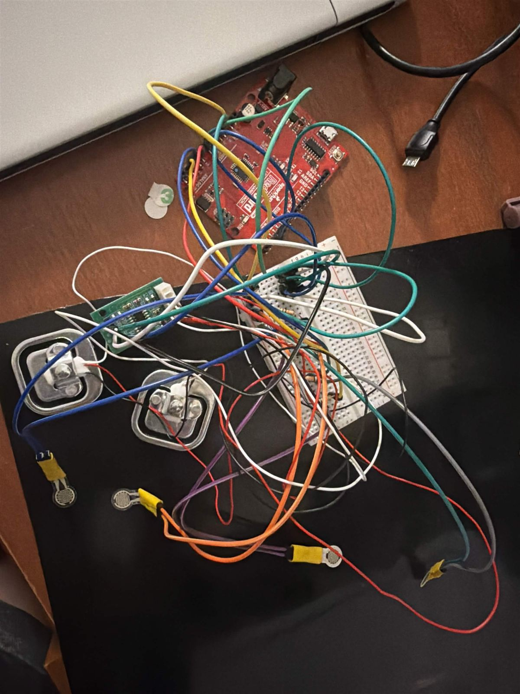
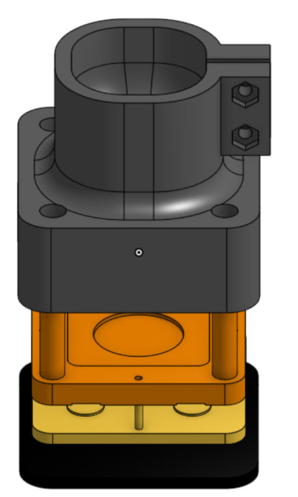
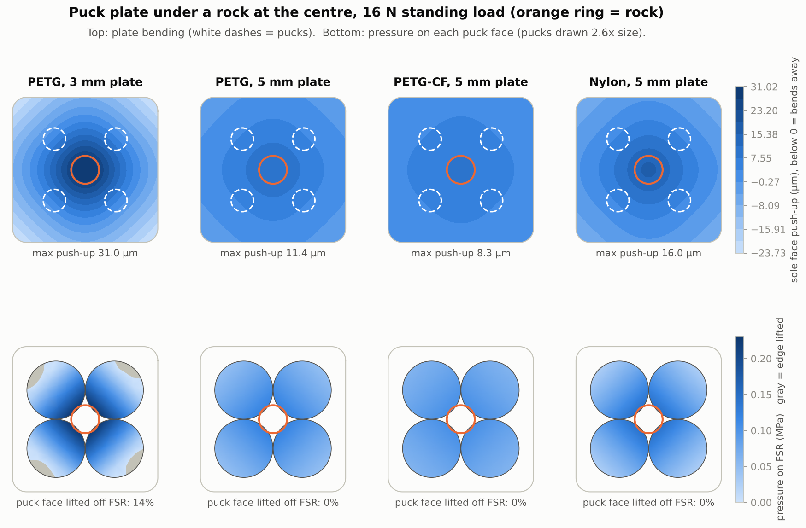

Tactile Foot Sensor
CUPI-02 · For the Symbiote hexapod · Cornell University Physical Intelligence · Mechanical Design Team · Mar 2026 – present
FabricationFDM 3D printing (TPU, Nylon)Breadboard prototyping & wiringSensor assembly
Purpose
Symbiote is a bio-inspired multi-robot system that pairs an autonomous UAV quadcopter with a hexapod ground robot for coordinated terrain surveying. For the hexapod to walk on unstructured ground, each foot needs to feel what it is standing on.
How it’s built
I designed, built, and tested a Velostat taxel-array tactile foot sensor in a 3D-printed TPU housing. Four pressure inputs feed an Arduino, and a Python script turns the stream into a live foot-pressure heatmap with the centre of pressure and an estimate of the foot’s pitch and roll.
For the current foot, the team chose Nylon for the whole printed foot instead of TPU. Nylon is tough: it bends instead of cracking on hard touchdowns and drops. TPU is too rubbery for the socket, which has to hold the load cell rigidly and clamp onto the tibia. In TPU the cell would tilt, the rubber would soak up force, and the clamp screws would loosen. The socket isn’t stiffness-critical (an Oct 19 study found it fine in every filament tested), so Nylon’s lower stiffness only matters for the puck plate.
The sole is VytaFlex 60 instead of silicone. A silicone sole grips well on clean indoor floors but does poorly on outdoor terrain, while VytaFlex 60 works on most terrain.
Testing
The design was validated in MuJoCo simulation and with Arduino (C++) and Python scripts for real-time force visualization and terrain-adaptive feedback.
A finite element model of the puck plate compared filaments and thicknesses under a worst-case load: 16 N pushed up through a Ø10 mm rock at the centre of the sole, landing between all four pucks (Fig. 5). A 3 mm PETG plate bows 31 µm and 14% of each puck face lifts off its FSR. Every 5 mm plate keeps full contact: PETG bends 11.4 µm, PETG-CF 8.3 µm and Nylon 16 µm.
The load cell reading doesn’t change with plate material, because all the force runs in series from the sole through the pucks and FSRs into the load cell. Even the largest bend stays far below the 1.2 mm gap to the carrier. The real risk with a thin plate is repeatability: a partly lifted puck can land a little differently every step. The takeaway is that thickness matters more than filament. PETG-CF gives the most even pressure, and Nylon is the most flexible option. The team kept Nylon for the plate anyway, for the toughness above. The study recommends a 5 mm plate, where Nylon still keeps full puck contact; the final thickness isn’t decided yet. Nylon-CF, the stiffest of the eight filaments studied, is the fallback if more margin is needed.
Specifications
| Part no. | Description | Process | Material | Status |
|---|---|---|---|---|
| CUPI-02-A | Taxel-array sensing layer | Prototyping, wiring | Velostat, FSRs, load cells | Prototype |
| CUPI-02-B | Foot housing | 3D printing | TPU | Built |
| CUPI-02-C | Firmware and telemetry | Arduino (C++) | — | Working |
| CUPI-02-D | Pressure heatmap and tilt estimate | Python, MuJoCo simulation | — | Working |
| CUPI-02-E | Load-cell foot: socket, carrier, puck plate | FDM 3D printing | Nylon | CAD |
| CUPI-02-F | Sole | — | VytaFlex 60 | CAD |

- RedBoard (Arduino-compatible)
- HX711 load-cell amplifier
- Load cells
- Force-sensitive resistors
- Breadboard

- Socket (Nylon)
- Carrier
- Puck plate
- VytaFlex 60 sole

Load-cell comparison: two half-bridges vs ATO button
Cross-section, movement exaggerated 400×
Force on the foot during one step
- True force
- Two 50 kg half-bridges
- ATO 20 kg button
Reading error (reading minus true force)
One footstep on the MKII hexapod, run through both sensor stacks. Change the robot, gait and amplifier to see what each load cell reads.
| Standing load per foot | — |
|---|---|
| Two-cell peak | — |
| ATO peak | — |
The two-cell stack barely uses its range (small signal). The ATO button uses more of its range (twice the signal) but gets close to its limit on an uncapped spike. Try the “Firmware capped” spike and the 10 samples/s amplifier.
| Measure | Two 50 kg half-bridges | ATO 20 kg button |
|---|
Assumptions
Two half-bridges: 50 kg (490 N) rating, sensitivity 0.0125 mV/N from the foot manual (0.2 mV at 16 N); safe overload assumed 150%. ATO button: 20 kg (196 N) rating, 5 V excitation, safe overload 150% (typical for button cells), body Ø20 × 12 mm from the ATO drawing. Amplifier noise (input-referred, rms): HX711 about 50 nV at 10 samples/s and 90 nV at 80 samples/s (datasheet); NAU7802 at 320 samples/s assumed 200 nV. Footstep shape: touchdown overshoot 2.7× standing, optional slip and re-contact spike. Accuracy and off-center errors are illustrative defaults, not measured.